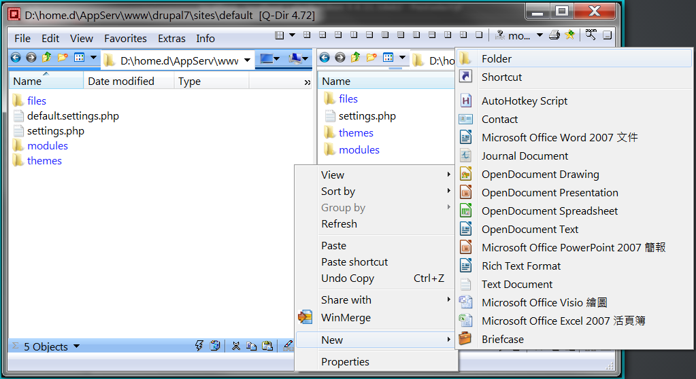
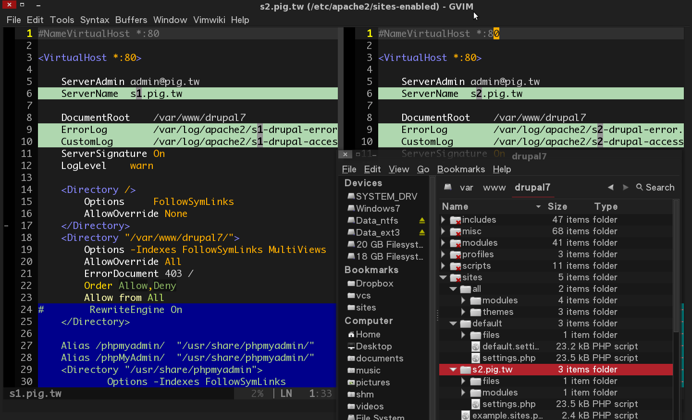

(聽過 Multi-site 的請舉手！)
Drupal 是近幾年來火速竄紅的內容管理系統 (CMS)，其整體架構、概念與 Linux 有著非常高的相似，擁有獨立核心及大量模組的 Drupal 幾乎可以解決一般架站的需求。
隨著網站們的成長，其模組的使用量也會隨之增長，造成維護上不易；這時就可以使用 multi-sites 技術來快速建置多網站，降低維護成本。
本次會題到些基本的系統及網路觀念，融會貫通後不管是在 Linux 上還是 Windows 上都可以輕鬆駕馭。
在 DocumentRoot 底下有多個 Drupal，這不是 Multi-site！
site1 - http://pig.tw/d7_s1/
site2 - http://pig.tw/d7_s2/
site3 - http://pig.tw/d7_s3/
[ jonny@wheezy ~ ]$ ls /var/www
d7_s1 d7_s2 d7_s3 index.html
[ jonny@wheezy ~ ]$ ls /var/www/d7_s1/sites/
all default example.sites.php README.txt
[ jonny@wheezy ~ ]$ ls /var/www/d7_s2/sites/
all default example.sites.php README.txt
[ jonny@wheezy ~ ]$ ls /var/www/d7_s3/sites/
all default example.sites.php README.txt
在 DocumentRoot 底下只有一個 Drupal。
site1 - http://s1.pig.tw/
site2 - http://s2.pig.tw/
site3 - http://s3.pig.tw/
[ jonny@wheezy ~ ]$ ls /var/www
d7 index.html
[ jonny@wheezy ~ ]$ ls /var/www/drupal7/sites/
all default example.sites.php README.txt s2.pig.tw s3.pig.tw
共用 Drupal 時，將會分享 sites/all 目錄給各個網站。
Modules - sites/all/modules
Themes - sites/all/themes
[ jonny@wheezy ~ ]$ ls /var/www/drupal7/sites/all/
modules themes
手動建立獨立的 modules, themes 目錄。
|
SITE1 sites/default/modules sites/default/themes |
SITE2 sites/s1.pig.tw/modules sites/s1.pig.tw/themes |
SITE1
# - modules
[ jonny@wheezy ~ ]$ mkdir /var/www/d7/sites/default/modules
# - themes
[ jonny@wheezy ~ ]$ mkdir /var/www/d7/sites/default/themes
SITE2
# - modules
[ jonny@wheezy ~ ]$ mkdir /var/www/d7/sites/s2.pig.tw/modules
# - themes
[ jonny@wheezy ~ ]$ mkdir /var/www/d7/sites/s2.pig.tw/themes
SITE1 + SITE2 
將多個 Domain Name 指到同一個 Drupal，並設定對應的 Database 及 Virtual host。
編寫 hosts 檔案。
[ jonny@wheezy ~ ]$ sudo vi /etc/hosts
127.0.0.1 s1.pig.tw
127.0.0.1 s2.pig.tw
127.0.0.1 s3.pig.tw
[ jonny@win32 ~ ]$ edit C:\Windows\System32\drivers\etc\hosts
127.0.0.1 s1.pig.tw
127.0.0.1 s2.pig.tw
127.0.0.1 s3.pig.tw
毋需自行架設 DNS Server，容易上手，但功能較多限制。
需自行架設 DNS Server 及編寫設定檔，適合系統管理者。
若不想花錢申請 DNS，可參考網路上的免費資源。
資料庫
MySQL, MariaDB, MSSQL ...
phpMyAdmin, Adminer, mysql-client (console)
Apache, lighttpd, Nginx, IIS ...
SITE1 與 SITE2 間除 highlight 的第 6, 9, 10 三行不同外，皆指向同個 DocumentRoot。 
{kind=link}